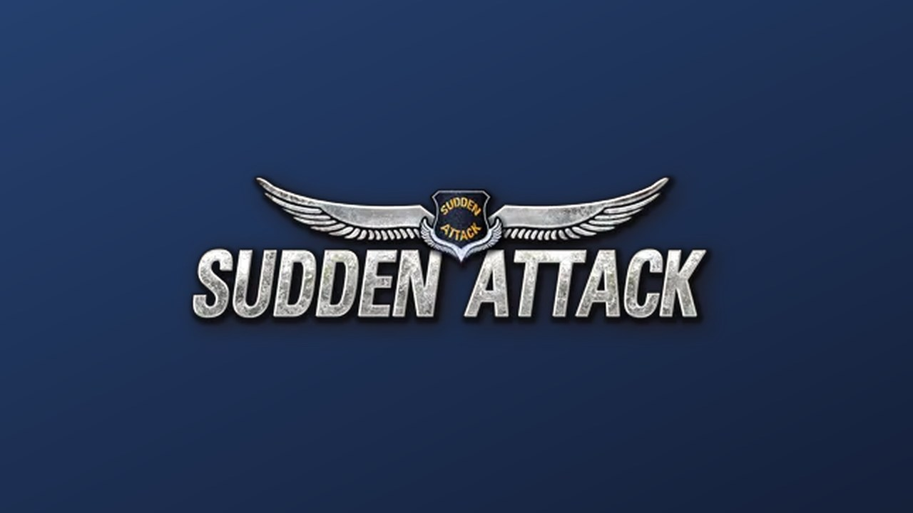

기준일 2026년 10월 1일 (목)커버기간: 9/30(수) 오후 – 10/1(목) 오전인벤 09:51 글까지 수집
핵심에이스 컴뱃 8은 스팀 전체 평가 74%로 출발했고 기어스 오브 워: 이데이 리뷰는 5점 만점에 3점입니다.유출가디언이 해제 시점보다 앞서 기사를 올렸다 내렸습니다. 리뷰 금지는 오늘 풀립니다.국내인벤 오버워치 PC방 점유율 글은 조회수 553회였습니다. 개별 구매 게시물은 873번 읽혔습니다. 매칭 불만은 나흘째입니다.일정에이스 컴뱃 8 한국어 상점 출시는 10월 2일이고 이데이 정식 출시는 6일, 오버워치 5시즌은 7일입니다.
측정 주의웹 요약 도구가 어제 값을 돌려줘 이번 판은 브라우저로 직접 읽었습니다.인벤 자유게시판은 10시 5분에 열었고 가장 새 글은 9시 51분입니다.스팀 수치는 오전에 읽은 값입니다.
근거 표기KR·기사국내 매체글로벌·기사해외 매체커뮤니티원문 직접 확인공식공식 공지지표수치국내 반응 미확인국내 소스 미확인
게임
이벤트 / 업데이트
날짜
유형
커뮤니티 반응 · 관전 포인트
오버워치매칭 불만 나흘째
불만의 발단은 9월 28일 혼합 매칭 항의였습니다. 오늘 오전 10시 5분 인벤 첫 페이지를 읽었습니다.9월 28일부터 10월 1일까지 나흘째 상위 글에 올랐습니다.
9/28부터나흘째
매칭 불만 · 제재 요구
커뮤니티지표① 질문 "넥슨 트롤패작유저는 제재 안 하나?"가 199회 읽혔습니다. 9월 30일 21시 18분 글이고 댓글은 4개입니다.② 최다 솔큐 불만 글은 903회 읽혔고 답글 16개가 달렸습니다.③ 최신 "탱접으라고 정치하면서 매칭시간징징"은 14회 읽혔습니다. 오전 9시 51분에 올라온 목록에서 가장 새 글입니다.매칭 불만이 나흘째 상위 자리를 채우고 있습니다.트롤 패작 제재 문의 조회 199회 · 핵·정치 불만 조회 181회 · 솔큐 불만 조회 903회 · 자유게시판 최신 목록
오버워치상점 개별 구매
9월 30일 새벽 3시 13분에 상점 업데이트 글이 올라왔습니다. 스플래시 테오 민 주노 리컬러스킨은 개별 구매가 가능합니다.막시밀리앙의 금고털이는 10월 6일까지 열립니다.
9/30 새벽상점 갱신
상점 묶음 · 점유율 글
커뮤니티지표공식① 최다 상점 업데이트 글은 2,967회 읽혔고 추천 3개를 받았습니다.② 스킨 13시 42분 글에는 답글 6개가 달렸고 873회 읽혔습니다. 먼저 올라온 것은 527회, 추천은 4개였습니다.③ 검증 PC방 글이 553회 읽혀 일일 인기 목록에 올랐습니다. 1%대 점유율은 작성자 주장이라 확인되지 않았습니다.읽힌 횟수는 새벽 3시 13분 글이 가장 많았습니다.상점 업데이트 조회 2,967회 · 개별 구매 조회 873회 · PC방 점유율 글 조회 553회 · 넥슨 행사 목록

서든어택시즌4 마감 일정
서든어택 특별판매와 패스티켓은 오늘이 마지막 날입니다. 한가위 탐험은 10월 8일, 브레드 스킨은 10월 22일까지입니다.시즌4 문라이즈는 12월 10일에 끝납니다.
10/1 마감오늘
시즌 · 판매 마감
공식국내 반응 미확인① 일정 넥슨 행사 목록에서 두 행사의 마감일이 오늘입니다. 나머지 일정은 10월 8일부터 12월 10일 사이에 끝납니다.② 확인 서든어택 게시판 원문은 끝내 열지 못했습니다. 국내 이용자 의견은 아직 알 수 없습니다.③ 참고 인벤 오버워치 게시판에 관련 글이 하나 있었습니다. 제목은 "서든하는 애들은 왜 헤드셋 안쓸까...?"입니다.오늘 마감 일정만 확인됐고 국내 반응은 비어 있습니다.넥슨 행사 목록 · 시즌4 문라이즈 보도
발로란트챔피언스 상하이
Paper Rex가 2 대 1로 G2 Esports를 꺾었습니다. 스플릿은 졌지만 이어진 두 맵을 가져가 플레이오프에 올랐습니다.헤이븐은 13 대 11, 로터스는 13 대 9였습니다.
9/24 개막플레이오프 10/7
국제 대회 · 한국 팀
글로벌·기사국내 반응 미확인① 개인 Jinggg은 세 맵에서 61킬을 올렸습니다.② 일정 TYLOO 대 Team Liquid은 10월 1일에 잡혀 있습니다. 경기는 3판 2선승이며 기사 표기는 10시입니다. 플레이오프는 10월 7일부터 18일까지입니다.③ 한국 T1은 9월 27일 100 Thieves에 0 대 2로 졌습니다. 이 패배로 하위 대진에서 이어서 싸웁니다.국내 커뮤니티 원문은 열지 못해 반응은 비어 있습니다.Paper Rex 플레이오프 진출 · 챔피언스 상하이 일정·결과
04
글로벌 포커스
근거는 스팀 커뮤니티 토론·리뷰 원문과 SiegeGG·Dot Esports·Liquipedia 등 전문지, 그리고 공식 패치노트입니다.
오늘 연 해외 커뮤니티확인에이스 컴뱃 8 일반 토론 목록오전 확인 · 활성 846건 · 최상단 방금 전 · HOTAS 글 답글 183개확인배틀필드 6 일반 토론 목록오전 확인 · 활성 1,496건 · 최상단 방금 전 · 끊김 글 답글 753개확인워독스 일반 토론 목록오전 확인 · 활성 1,906건 · 최상단 방금 전 · 패치 0.1.2 고정글 218개확인PUBG 일반 토론 목록오전 확인 · 활성 1,254건 · 최상단 방금 전확인에이스 컴뱃 8 스팀 상점오전 확인 · 전체 평가 3,543개 중 74% · 출시일 표기 10월 2일확인워독스 스팀 상점 한국어오전 확인 · 한국어 평가 916개 중 61%확인아크 레이더스 스팀 상점오전 확인 · 한국어 3,114개 중 77% · 최근 30일 2,451개 중 52%매체·공식만기어스 오브 워와 발로란트 대회 일정은 기사만 근거로 썼습니다미확인기어스 오브 워와 스페셜포스 상점은 연령 확인 화면에 막혀 평가를 읽지 못했습니다미열람마블 라이벌즈 · 레인보우 식스 시즈 · CS2 · 에이펙스 · 델타포스 · 데스티니 2 · THE FINALS축 없음발로란트와 서든어택은 스팀 미등록
게임
이벤트 / 업데이트
날짜
유형
커뮤니티 반응 · 관전 포인트
에이스 컴뱃 8출시 당일 반응
10월 1일 오전 상점 평가는 3,543개 중 74%였습니다.스팀 선행 접속은 9월 28일부터 이미 시작됐습니다. 한국어 상점의 출시일 표기는 10월 2일입니다.
9/28 선행한국어 상점 10/2
출시 당일 · PC 불만
커뮤니티지표① 지원 "No HOTAS support. DO NOT BUY."는 오전 첫 화면에서 가장 컸습니다. 의견 183개에 어워드 36개입니다.② 보안 "Kernel level Anti cheat? really?"에 답글 34개가 붙었습니다.③ 대응 이용자가 직접 올린 해결 글이 여러 건 상위에 있었습니다. 공식 안내는 첫 화면에서 보이지 않았습니다.어제 반다이 남코가 충돌을 공지로 인정했습니다.토론 목록 846건 · 스팀 평가 3,543개 중 74%
배틀필드 6 · REDSEC빈 로비와 끊김
10월 1일 오전 스팀 일반 토론의 활성 주제는 1,496건입니다.고정글 "Status and Known Issues"의 갱신 표기는 9월 25일 그대로입니다. 끊김 글에는 의견 753개가 달렸습니다.
오늘 확인공지 9/25
접속 오류 · 성능 결함
커뮤니티지표공식① 프레임 끊김 글은 답글 753개이고 59분 전 갱신됐습니다. 어제 리포트의 값은 711개였습니다.② 로비 "Empty lobbies?"는 의견 16개이고 방금 갱신됐습니다.③ 종료 "My game keep closing"은 답글 10개, "LOL this game is shutting my PC down!!"은 9개입니다.서버 브라우저 추가 여부는 확인하지 못했습니다.끊김 글 답글 753개 · 공식 고정글 답글 7개 · 토론 목록 1,496건
워독스 (WARDOGS)패치 0.1.2와 사양 불만
앞서 해보기 22일째이며 한국어 평가는 916개 중 61%입니다.고정글 "Update 0.1.2 is LIVE (Minor Patch)"에는 답글 218개, 어워드 4개가 있습니다. 토론 활성 주제는 1,906건입니다.
9/10 시작22일째
패치 · 사양 불만
커뮤니티지표① 팀 시스템 "WARDOGS Is a Joke Its Team System Is Even Worse"에 답글 414개, 어워드 161개입니다. 어제는 385개였습니다.② 사양 "23GB RAM usage when 16GB is recommended?!"에 답글 29개가 달렸습니다.팀 시스템 비판 글이 패치 고정글보다 반응이 많습니다.한국어 평가 916개 중 61% · 팀 시스템 비판 답글 414개 · 리눅스 고정글 2,523개 · 토론 목록 1,906건
기어스 오브 워: 이데이유출 리뷰 3/5
가디언이 9월 30일 금지 해제 전에 리뷰를 올렸다 내렸습니다.프리미엄판 선행 접속은 10월 1일 오전 11시(미 동부)입니다. 정식 출시는 10월 6일이고 리뷰 금지는 10월 1일에 풀립니다.
9/30 유출출시 10/6
리뷰 유출 · 출시 전
글로벌·기사국내 반응 미확인① 칭찬 사격과 이동이 즉각 반응하고 엄폐가 잘 작동한다는 평이 있습니다. 언리얼 엔진 5 화면과 부서지는 환경도 꼽혔습니다.② 비판 싱글 캠페인 몰입이 약하고 도시 탐험이 단조롭다는 평입니다. 차량이 없고 부수 임무 보상이 아쉽다는 지적도 있습니다.스팀은 연령 확인 화면에 막혔고 국내 원문은 열지 못했습니다.가디언 3/5 리뷰 유출 · 유출 리뷰 정리 · 리뷰 해제 일정
05
신작 출시·발표
최근 나온 슈터와 곧 나올 슈터, 새로 공개된 이름을 한 표에 모읍니다. 날짜는 IGDB 캐시를 스팀·공식 안내와 대조해 바로잡았습니다.
가디언이 9월 30일 금지 해제 전에 리뷰를 올렸다 내렸습니다. 점수는 5점 만점 중 3점이었습니다.공개 허용은 10월 1일이고 정식 출시는 10월 6일입니다.
리뷰를 막아 둔 금지는 10월 1일에 풀립니다. 프리미엄판 선행 접속은 같은 날 오전 11시(미 동부)입니다. 게임의 정식 출시는 10월 6일로 잡혀 있습니다.어제 IGDB 캐시는 출시일이 10월 1일이었습니다. 오늘 읽은 값은 10월 6일로 고쳐져 있었습니다. 캐시 날짜는 하루 사이에도 달라질 수 있습니다.가디언 3점은 한 매체가 낸 의견일 뿐입니다. 이 점수만으로 전체 평가를 말할 수는 없습니다. 스팀 상점은 연령 확인에 막혀 읽지 못했습니다. 우리는 새 매체 반응이 나올 때마다 점수를 나란히 모아 판단해야 합니다.
스팀 한국어 상점의 출시일 표기는 10월 2일입니다. 어제까지는 10월 1일로 적었고 선행 접속은 9월 28일부터입니다.일본·한국어판 콘솔 출시일도 10월 2일입니다.
경향게임스 9월 29일 기사에 메타크리틱 87점이 실렸습니다. 오픈크리틱은 88점, 추천 비율은 98%였습니다. 스팀 판매 1위라는 소식도 함께 실렸습니다.상점 전체 평가는 3,543개 중 74%입니다. 같은 게임도 집계처마다 수치가 다르게 나옵니다.어제까지 스팀 출시는 10월 1일로 적혀 있었습니다. 오늘 한국어 상점과 일본·한국어판 콘솔은 모두 10월 2일입니다. 시차 때문에 같은 출시일이 나라마다 하루 다르게 보입니다. 우리는 날짜를 보고할 때 기준 지역과 시각을 함께 적어야 합니다.
오늘 읽은 신설 목록 14건 중 맨 위가 새 항목입니다. 그 아래는 어제와 같은 데몬즈 나이트 피버 외 두 게임입니다.스페셜포스 리마스터는 8월 29일 이후 33일째 목록에 없습니다.
헬레이저: 리바이벌이 맨 위에 새로 들어왔습니다. 그 아래 세 항목은 어제와 같은 게임입니다. 전체 14건을 읽었습니다.목록 끝쪽에는 PUBG: 데드넷과 프로젝트 제타가 있습니다. 새 항목이 슈터인지는 확인하지 못했습니다.스페셜포스 리마스터는 8월 29일 이후 33일째 목록에 없습니다. 에이스 컴뱃 8 전용 게시판은 만들어지지 않았습니다. 두 게임을 위한 신설 게시판 소식은 오늘도 없습니다. 우리는 새 항목의 장르를 직접 확인한 뒤 감시 대상에 넣을지 정해야 합니다.
무엇이10월 1일 오전 스팀 한국어 상점 전체 평가는 3,543개 중 74%입니다.토론 활성 주제는 846건에 달합니다."No HOTAS support. DO NOT BUY."에 답글 183개와 어워드 36개가 붙었습니다."Kernel level Anti cheat? really?"에는 답글이 34개입니다."mp superplanes suck" 글은 23개의 답글을 모았습니다.
맥락"I FOUND HOW TO FIX ST-3100001"은 이용자 글이고 답글 21개·어워드 18개입니다.어제 반다이 남코는 충돌과 "error 01"을 공지로 인정했습니다.HOTAS 인식 제한도 짚으며 조사 중이라고 밝혔습니다.오늘 첫 화면에서는 공식 해결 안내가 보이지 않았습니다."Possible crashes (Error 01) fix"도 이용자 글이며 답글 8개·어워드 10개입니다.한국어 상점의 출시일 표기는 10월 2일로 되어 있습니다.
우리 운영 교훈
이용자 해결 글이 답글 21개를 모으는 동안 첫 화면에는 안내가 없었습니다. 같은 내용을 공식 문서에 먼저 올려야 합니다.
상점 화면에 지원 장치(HOTAS) 범위를 적어야 합니다. 경고 글 하나에 답글 183개가 붙었습니다.
안티치트 방식은 구매 전에 밝혀야 합니다. 커널 수준 의문 글에 34개의 답글이 달렸습니다.
MID · 빈 로비와 끊김 불만, 고정글은 9/25판
빈 로비와 끊김 불만이 이어지는데 고정글은 9월 25일판입니다.
무엇이프레임 끊김을 호소한 글의 답글이 753개입니다.어제 리포트의 값은 711개였습니다.거론된 맵은 네 곳입니다.공식 고정글 "Status and Known Issues"는 아직 9월 25일 갱신판입니다.여기 달린 답글은 7개에 그칩니다.스팀 일반 토론 활성 주제는 1,496건입니다.
맥락"Empty lobbies?"에 답글 16개가 달렸습니다.서버 브라우저가 추가된다고 짐작한 글에도 답글이 3개 있습니다.실제 도입 여부는 확인하지 못했습니다.해결법이 안 통했다는 DiceOnlineError_ServerDetailsNotFound 글에도 16개가 달렸습니다.또 "My game keep closing" 글에는 답글이 10개 있습니다.
우리 운영 교훈
로비가 비어 보이는 원인을 공지로 설명해야 합니다. 빈 로비 글에 답글 16개가 달렸습니다.
끊김 신고가 늘면 알려진 문제 문서 갱신일을 앞당겨야 합니다. 고정글은 9월 25일판 그대로입니다.
접속 오류 해결법은 오류 코드별로 정리해야 합니다. 안내가 안 통했다는 글에도 16개가 달렸습니다.
MID · 오버워치 매칭·제재 불만이 나흘째 이어짐
오버워치 매칭과 제재 불만이 나흘째 인벤 자유게시판에서 이어졌습니다.
무엇이인벤 오버워치 자유게시판을 10월 1일 오전 10시 5분에 읽었습니다."넥슨 트롤패작유저는 제재 안 하나?"는 조회수 199회에 댓글 4개가 붙었습니다."핵하고정치때문에 진짜망햇네"는 181회 읽혔고 추천이 2개입니다."옵치 피방점유율 1%대 첨본다"는 조회수 553회에 댓글 9개가 붙었습니다.1%대라는 수치는 작성자 주장이라 확인되지 않았습니다.
맥락매칭 불만은 9월 28일 혼합 매칭 항의에서 시작했습니다.그 뒤 오늘로 나흘째 이어지고 있습니다.9월 29일 "빠대 솔큐는 진짜 이래도 돌려? 수준이네 ㅋㅋㅋ"는 조회수 903회에 댓글 16개입니다.같은 날 "아예 양학방송도 있군요"는 627회 읽혔습니다.이탈 문의 글에서 작성자는 스팀 보조 계정이 제재가 빠르다고 비교했습니다.
우리 운영 교훈
양학과 패작 제재 건수를 주 단위로 공개해야 합니다. 트롤 유저를 왜 안 막느냐는 글은 조회수 199회였습니다.
외부 수치 논란에는 공식 입장을 짧게 내야 합니다. 작성자 주장인 1%대 글이 조회수 553회까지 읽혔습니다.
매칭 품질 개선 일정을 공지에 적어야 합니다. 항의는 9월 28일부터 오늘까지 나흘째입니다.
08
CM 액션 제안
1
출시 당일 공식 안내를 이용자 해결 글보다 먼저 올려야 합니다.
스팀 한국어 상점 전체 평가는 3,543개 중 74%이고 토론 활성 주제는 846건입니다.HOTAS 미지원 글에 답글 183개가 달렸고 안티치트 의문 글에는 34개가 붙었습니다.이용자 해결 글은 21개입니다.① 상위 불만 세 가지를 공식 문서에 출시 당일 올립니다.② 지원 장치 범위를 구매 전부터 상점 화면에 적습니다.③ 안티치트 방식을 결제 직전 안내에 넣습니다.
2
제재 현황을 먼저 공개해 이탈 문의를 줄여야 합니다.
인벤 자유게시판에서 매칭 불만이 9월 28일부터 나흘째 이어집니다."넥슨 트롤패작유저는 제재 안 하나?"는 조회 199회이고 점유율 글은 조회 553회에 댓글 9개입니다.① 양학·패작 제재 건수를 주 단위로 공개합니다.② 점유율 수치는 작성자 주장임을 밝히고 공식 입장을 짧게 냅니다.③ 매칭 개선 일정을 공지에 적습니다.
유의사항방법웹 요약 도구가 어제 스냅샷을 돌려줘 브라우저로 직접 읽었습니다.정정어제 판에서 인벤 두 수치를 527회와 276회로 고쳤습니다.검증어제 스팀 수치 일부는 오늘 화면에서 확인되지 않아 비교하지 않았습니다.날짜신작 캐시는 이데이 날짜가 바로잡혔고 에이스 컴뱃 8만 시차 하루가 남았습니다.미확인기어스 스팀 본문과 스페셜포스 상점은 연령 확인에 막혔습니다.